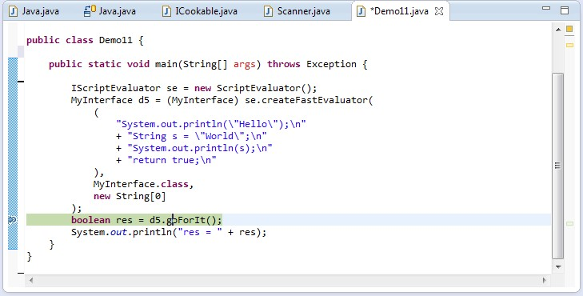
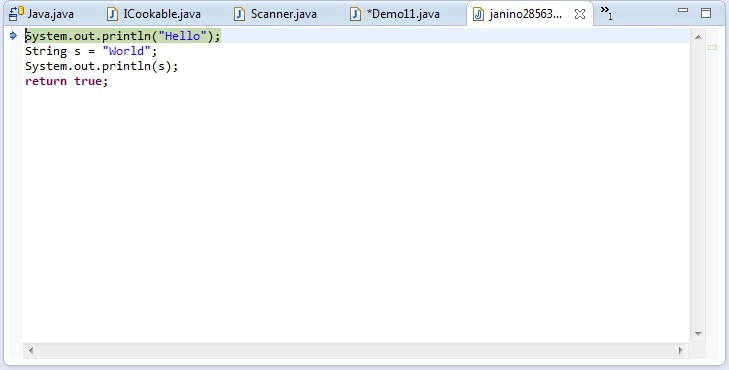
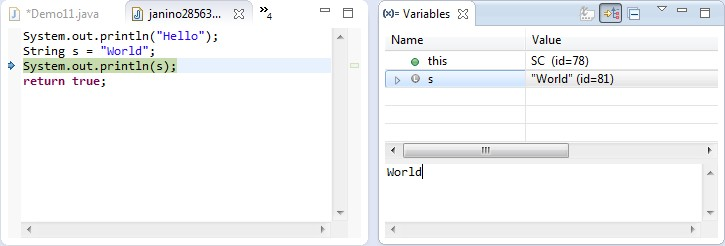

A super-small, super-fast Java compiler
Janino is a super-small, super-fast Java compiler.
Janino can not only compile a set of source files to a set of class files like JAVAC, but also compile a Java expression, a block, a class body, one .java file or a set of .java files in memory, load the bytecode and execute it directly in the running JVM.
JANINO is integrated with Apache Commons JCI ("Java Compiler Interface") and JBoss Rules / Drools.
JANINO can also be used for static code analysis or code manipulation.
What's this all about? Check out this PDF presentation for a quick start. (Notice that some of the information is outdated, e.g. the references to CODEHAUS, which has passed away some time 2015.)
The major design goal was to keep the compiler small and simple, while providing an (almost) complete Java compiler.
The following elements of the Java programming language are implemented (or, where noted, partially implemented):
package declaration, import declarationclass declarationinterface declarationextends and implements){...})if ... else statementfor statementwhile statementdo ... while statementtry ... catch ... finally statementthrow statementreturn statementbreak statementcontinue statementswitch statementsynchronized statementboolean, char, byte, short,
int, long, float, double)
=+=, -=, *=, /=,
&=, |=, ^=, %=, <<=,
>>=, >>>=
? ... :, &&, ||&, ^, |&, ^, |*, /, %, +, -,
<<, >>, >>>
+++ and --instanceof+, -, ~, !System.out)super.meth(), super.field)this (reference to current instance)this(a, b, c);)super(a, b, c);)System.out.println("Hello"))new Foo())new int[10][5][])new Foo[10][5][])args[0])null literalthrows clauseString[] a = { "x", "y", "z" })int.class)String.class)-g:lines")-g:source")-g:vars")@deprecated
doc comment tag
public, protected, private, default)
assert (partially implemented - assertions are always enabled, as if the JVM was started
with the "-ea" command line option)
StringBuilder class used for string concatenationList<String>):
Are parsed, but otherwise ignored. The most significant restriction that follows is
that you must cast return values from method invocations, e.g. "(String) myMap.get(key)"
for statementenum declarationenum switch statement@Override annotationswitch statement (JLS7 14.11)try-with-resources statement (JLS7 14.20.3)catching and rethrowing multiple exception types: Partially implemented; parsed and
unparsed, but not compilable
try-with-resources statement, allowing VariableAccesses as
resources (JLS9 14.20.3)
JANINO supports all these language features, even if it runs in an older JRE!
JANINO only requires a Java 8 (or later) JRE, not a JDK. It has no dependencies whatsoever on any third-party libraries.
JANINO is routinely tested against the following JREs:
| Java version | JRE version | Status |
|---|---|---|
| 8 | 1.8.0_482 | passed |
| 17 | Zulu 17.0.8+7 | passed |
| 21 | 21.0.3 | passed |
| 25 | Zulu 25.0.2 | passed |
The following elements of the Java programming language are not implemented (or, where noted, are only partially implemented):
assert: Partially implemented - assertions are always enabled, as if the JVM was started
with the "-ea" command line option
Outer.super.meth())(String) myMap.get(key)".
Further consequences:
compareTo(Object) instead of compareTo(Foo) for
Comparable<Foo>
A<T> overrides
m(T) with m(String), then an invocation through A still
invokes A.m()
Field.getGenericType()) reports the erased types
f(list.get(0)) invokes
f(Object), not f(String)
Outer<String>.Inner)f(1) invokes f(int...) instead of f(Object)
catching and rethrowing multiple exception types: Partially implemented; parsed and
unparsed, but not compilable
final)
Interface.super.meth()), e.g. of default methods
switch expressions, case ... -> labels, and case labels with
several constants
instanceof and for switchenums and local interfacesThe characterization tests record, for about 200 language constructs, the result that the Java language requires and the current behavior of Janino.
Where Janino deviates from JAVAC beyond these limitations (invalid code that it accepts, valid code that it rejects or that behaves differently), see Differences between Janino and javac.
JANINO is available under the New BSD License.
From version 3.1.15 on, the releases of this fork are available on MAVEN Central under the group
ID io.github.janino-lts (the original versions up to 3.1.12 have the group ID
org.codehaus.janino), and as GitHub
releases. The Java packages are unchanged.
If you are using MAVEN, add this entry to your POM file:
<dependency>
<groupId>io.github.janino-lts</groupId>
<artifactId>janino</artifactId>
<version>***</version>
</dependency><dependency> <groupId>io.github.janino-lts</groupId> <artifactId>janino</artifactId> <version><var>***</var></version></dependency>
<dependency> <groupId>io.github.janino-lts</groupId> <artifactId>janino</artifactId> <version><var>***</var></version></dependency> |
(Replace "***" with the latest version of JANINO; commons-compiler comes in as a transitive
dependency.)
Because the group ID is different, MAVEN does not recognize the original artifacts and the ones of this fork
as versions of the same artifact. If another dependency brings in org.codehaus.janino
artifacts, exclude them, otherwise the same classes are on the class path twice (and if the library uses
commons-compiler-jdk, add io.github.janino-lts:commons-compiler-jdk as well):
<dependency>
<groupId>...</groupId>
<artifactId>library-that-uses-janino</artifactId>
<version>...</version>
<exclusions>
<exclusion>
<groupId>org.codehaus.janino</groupId>
<artifactId>*</artifactId>
</exclusion>
</exclusions>
</dependency>
The releases up to 3.1.14 of this fork are not on MAVEN Central; they are only available as GitHub
releases, and use the group ID of the original (org.codehaus.janino). To use one of them with
MAVEN, download the POM and JAR files of the release, and install them into your local repository (the
parent POM first):
mvn install:install-file -Dfile=janino-parent-version.pom -DpomFile=janino-parent-version.pom
mvn install:install-file -Dfile=commons-compiler-version.jar -DpomFile=commons-compiler-version.pom
mvn install:install-file -Dfile=janino-version.jar -DpomFile=janino-version.pomIf you are not using MAVEN, do the following instead:
Each GitHub release of this fork contains a file SHA256SUMS with the checksums of all its
files. Make sure to check them to prevent supply chain attacks:
sha256sum -c SHA256SUMS
The packages of this fork on MAVEN Central (io.github.janino-lts) are signed with this PGP key
(fingerprint D7FA DB51 D921 93FC A6BA 204D C0D2 FF51 226A 8B8B):
Key #4
The original Janino packages on MAVEN Central are signed with one of these PGP keys:
Key #1
Key #2
Key #3
If you're using an IDE like ECLIPSE, you can optionally download "janino-version-sources.jar" and "commons-compiler-version-sources.jar" and configure them as the source attachments. That'll get you tooltip JAVADOC and source level debugging into the JANINO libraries.
Use one of the features, e.g. the "expression evaluator", in your program:
import org.codehaus.janino.*;
ExpressionEvaluator ee = new ExpressionEvaluator();
ee.cook("3 + 4");
System.out.println(ee.evaluate()); // Prints "7".Compile, run, ... be happy!
The ShippingCost class demonstrates how easy it is to use Janino as an expression evaluator.
The ExpressionDemo class implements a command line-based test environment for the expression evaluator.
The ScriptDemo class implements a command line-based test environment for the script evaluator.
The ClassBodyDemo class implements a command line-based test environment for the class body evaluator.
The DeclarationCounter class implements a command-line utility that counts class, interface, field and local variable declarations in a set of Java source files.
The complete version change log is available here.
The full JAVADOC documentation for JANINO is available online for the latest version, and for download (as "-javadoc.jar" files) with each release and, from version 3.1.15 on, on MAVEN Central. The JAVADOC of the original versions is available on MAVEN Central as well.
The specifications of the Java programming language:
Books that refer to the JANINO technology:
Say you build an e-commerce system, which computes the shipping cost for the items that the user put into his/her shopping cart. Because you don't know the merchant's shipping cost model at implementation time, you could implement a set of shipping cost models that come to mind (flat charge, by weight, by number of items, ...) and select one of those at run-time.
In practice, you will most certainly find that the shipping cost models you implemented will rarely match what the merchant wants, so you must add custom models, which are merchant-specific. If the merchant's model changes later, you must change your code, re-compile and re-distribute your software.
Because this is so unflexible, the shipping cost expression should be specified at run-time, not at compile-time. This implies that the expression must be scanned, parsed and evaluated at run-time, which is why you need an expression evaluator.
A simple expression evaluator would parse an expression and create a "syntax tree". The expression "a + b * c", for example, would compile into a "Sum" object who's first operand is parameter "a" and who's second operand is a "Product" object who's operands are parameters "b" and "c". Such a syntax tree can evaluated relatively quickly. However, the run-time performance is about a factor of 100 worse than that of "native" Java code executed directly by the JVM. This limits the use of such an expression evaluator to simple applications.
Also, you may want not only do simple arithmetics like "a + b * c % d", but take the concept further and have a real "scripting" language which adds flexibility to your application. Since you know the Java programming language already, you may want to have a syntax that is similar to that of the Java programming language.
All these considerations lead to compilation of Java code at run-time, like some engines (e.g. JSP engines) already do. However, compiling Java programs with ORACLE's JDK is a relatively resource-intensive process (disk access, CPU time, ...). This is where Janino comes into play... a light-weight, "embedded" Java compiler that compiles simple programs in memory into JVM bytecode which executes within the JVM of the running program.
OK, now you are curious... this is how you use the ExpressionEvaluator:
package foo;
import java.lang.reflect.InvocationTargetException;
import org.codehaus.commons.compiler.CompileException;
import org.codehaus.janino.ExpressionEvaluator;
public class Main {
public static void
main(String[] args) throws CompileException, InvocationTargetException {
// Now here's where the story begins...
ExpressionEvaluator ee = new ExpressionEvaluator();
// The expression will have two "int" parameters: "a" and "b".
ee.setParameters(new String[] { "a", "b" }, new Class[] { int.class, int.class });
// And the expression (i.e. "result") type is also "int".
ee.setExpressionType(int.class);
// And now we "cook" (scan, parse, compile and load) the fabulous expression.
ee.cook("a + b");
// Eventually we evaluate the expression - and that goes super-fast.
int result = (Integer) ee.evaluate(new Object[] { 19, 23 });
System.out.println(result);
}
}Notice: If you pass a string literal as the expression, be sure to escape all Java special characters, especially backslashes.
The compilation of the expression takes 670 microseconds on my machine (2 GHz P4), and the evaluation 0.35 microseconds (approx. 2000 times faster than compilation).
There is a sample program "ExpressionDemo" that you can use to play around with the ExpressionEvaluator, or you can study ExpressionDemo's source code to learn about ExpressionEvaluator's API:
$ java -cp janino.jar:commons-compiler.jar \
> org.codehaus.commons.compiler.samples.ExpressionDemo \
> -help
Usage:
ExpressionDemo { <option> } <expression> { <parameter-value> }
Compiles and evaluates the given expression and prints its value.
Valid options are
-et <expression-type> (default: any)
-pn <comma-separated-parameter-names> (default: none)
-pt <comma-separated-parameter-types> (default: none)
-te <comma-separated-thrown-exception-types> (default: none)
-di <comma-separated-default-imports> (default: none)
-help
The number of parameter names, types and values must be identical.
$ java -cp janino.jar:commons-compiler.jar \
> org.codehaus.commons.compiler.samples.ExpressionDemo \
> -et double \
> -pn x \
> -pt double \
> "Math.sqrt(x)" \
> 99
Result = 9.9498743710662
$Analogously to the expression evaluator, a ScriptEvaluator API exists that compiles and processes a Java "block", i.e. the body of a method. If a return value other than "void" is defined, then the block must return a value of that type.
As a special feature, it allows methods to be declared. The place and order of the method declarations is not relevant.
Example:
package foo;
import java.lang.reflect.InvocationTargetException;
import org.codehaus.commons.compiler.CompileException;
import org.codehaus.janino.ScriptEvaluator;
public class Main {
public static void
main(String[] args) throws CompileException, NumberFormatException, InvocationTargetException {
ScriptEvaluator se = new ScriptEvaluator();
se.cook(
""
+ "static void method1() {\n"
+ " System.out.println(1);\n"
+ "}\n"
+ "\n"
+ "method1();\n"
+ "method2();\n"
+ "\n"
+ "static void method2() {\n"
+ " System.out.println(2);\n"
+ "}\n"
);
se.evaluate();
}
}As for the expression compiler, there is a demo program "ScriptDemo" for you to play with the ScriptEvaluator API:
$ java -cp janino.jar:commons-compiler.jar \
> org.codehaus.commons.compiler.samples.ScriptDemo -help
Usage:
ScriptDemo { <option> } <script> { <parameter-value> }
Valid options are
-rt <return-type> (default: void)
-pn <comma-separated-parameter-names> (default: none)
-pt <comma-separated-parameter-types> (default: none)
-te <comma-separated-thrown-exception-types> (default: none)
-di <comma-separated-default-imports> (default: none)
-help
The number of parameter names, types and values must be identical.
$ java -cp janino.jar:commons-compiler.jar \
> org.codehaus.commons.compiler.samples.ScriptDemo '
> for (int i = 0; i < 3; i++) {
> System.out.println("HELLO");
> }'
HELLO
HELLO
HELLO
Result = (null)
$Check the source code of ScriptDemo to learn more about the ScriptEvaluator API.
Analogously to the expression evaluator and the script evaluator, a ClassBodyEvaluator exists that compiles and processes the body of a Java class, i.e. a series of method and variable declarations. If you define a contract that the class body should define a method named "main()", then your script will look almost like a "C" program:
public static void
main(String[] args) {
System.out.println(java.util.Arrays.asList(args));
}The "ClassBodyDemo" program (source code) demonstrates this:
$ java -cp janino.jar:commons-compiler.jar \
> org.codehaus.commons.compiler.samples.ClassBodyDemo -help
Usage:
ClassBodyDemo <class-body> { <argument> }
ClassBodyDemo -help
If <class-body> starts with a '@', then the class body is read
from the named file.
The <class-body> must declare a method "public static void main(String[])"
to which the <argument>s are passed. If the return type of that method is
not VOID, then the returned value is printed to STDOUT.
$ java -cp janino.jar:commons-compiler.jar \
> org.codehaus.commons.compiler.samples.ClassBodyDemo '
> public static void
> main(String[] args) {
> System.out.println(java.util.Arrays.asList(args));
> }' \
> a b c
[a, b, c]
$
The SimpleCompiler compiles a single .java file ("compilation unit").
Opposed to normal Java compilation, that compilation unit may declare more than one public type.
Example:
// This is file "Hello.java", but it could have any name.
public
class Foo {
public static void
main(String[] args) {
new Bar().meth();
}
}
public
class Bar {
public void
meth() {
System.out.println("HELLO!");
}
}It returns a ClassLoader from which you can retrieve the classes that were compiled.
To run this, type:
$ java -cp janino.jar:commons-compiler.jar \
> org.codehaus.janino.SimpleCompiler -help
Usage:
org.codehaus.janino.SimpleCompiler <source-file> <class-name> { <argument> }
Reads a compilation unit from the given <source-file> and invokes method
"public static void main(String[])" of class <class-name>, passing the
given <argument>s.
$ java -cp janino.jar:commons-compiler.jar \
> org.codehaus.janino.SimpleCompiler \
> Hello.java Foo
HELLO!
$
The Compiler compiles a set of .java files ("compilation units"), and creates .class files.
Each compilation unit may declare a different package, and the compilation units may reference each other,
even in a circular manner.
Example:
ICompiler compiler = compilerFactory.newCompiler();
compiler.compile(new File("pkg1/A.java"), new File("pkg2/B.java"));
However the Compiler can be reconfigured to read the compilation units from a different source,
and/or to store the classes in a different place, e.g. into a Map, which is then loaded into
the VM through a ClassLoader:
ICompiler compiler = compilerFactory.newCompiler();
// Store generated .class files in a Map:
Map<String, byte[]> classes = new HashMap<String, byte[]>();
compiler.setClassFileCreator(new MapResourceCreator(classes));
// Now compile two units from strings:
compiler.compile(new Resource[] {
new StringResource(
"pkg1/A.java",
"package pkg1; public class A { public static int meth() { return pkg2.B.meth(); } }"
),
new StringResource(
"pkg2/B.java",
"package pkg2; public class B { public static int meth() { return 77; } }"
),
});
// Set up a class loader that uses the generated classes.
ClassLoader cl = new ResourceFinderClassLoader(
new MapResourceFinder(classes), // resourceFinder
ClassLoader.getSystemClassLoader() // parent
);
Assert.assertEquals(77, cl.loadClass("pkg1.A").getDeclaredMethod("meth").invoke(null));
The JavaSourceClassLoader extends Java's java.lang.ClassLoader class with the
ability to load classes directly from source code.
To be precise, if a class is loaded through this class loader, it searches for a matching ".java" file in any of the directories specified by a given "source path", reads, scans, parses and compiles it and defines the resulting classes in the JVM. As necessary, more classes are loaded through the parent class loader and/or through the source path. No intermediate files are created in the file system.
Example:
// srcdir/pkg1/A.java
package pkg1;
import pkg2.*;
public class A extends B {
}
// srcdir/pkg2/B.java
package pkg2;
public class B implements Runnable {
public void run() {
System.out.println("HELLO");
}
}
// Sample code that reads, scans, parses, compiles and loads
// "A.java" and "B.java", then instantiates an object of class
// "A" and invokes its "run()" method.
ClassLoader cl = new JavaSourceClassLoader(
this.getClass().getClassLoader(), // parentClassLoader
new File[] { new File("srcdir") }, // optionalSourcePath
(String) null, // optionalCharacterEncoding
DebuggingInformation.NONE // debuggingInformation
);
// Load class A from "srcdir/pkg1/A.java", and also its superclass
// B from "srcdir/pkg2/B.java":
Object o = cl.loadClass("pkg1.A").newInstance();
// Class "B" implements "Runnable", so we can cast "o" to
// "Runnable".
((Runnable) o).run(); // Prints "HELLO" to "System.out".If the Java source is not available in files, but from some other storage (database, main memory, ...), you may specify a custom ResourceFinder instead of the directory-based source path.
If you have many source files and you want to reduce the compilation time, you may want to use the
CachingJavaSourceClassLoader, which uses a cache provided by the application to store class
files for repeated use.
JANINO has a sister project "jsh" which implements a "shell" program similar to "bash", "ksh", "csh" etc., but with Java syntax.
The Compiler class mimics the behavior of ORACLE's javac tool. It compiles a set of "compilation units" (i.e. Java source files) into a set of class files.
Using the "-warn" option, Janino emits some probably very interesting warnings which may help you to "clean up" the source code.
The BASH script "bin/janinoc" implements a drop-in replacement for ORACLE's JAVAC utility:
$ janinoc -sourcepath src -d classes src/com/acme/MyClass.java
$ janinoc -help
A drop-in replacement for the JAVAC compiler, see the documentation for JAVAC
Usage:
java java.lang.Compiler [ <option> ] ... <source-file> ...
Supported <option>s are:
-d <output-dir> Where to save class files
-sourcepath <dirlist> Where to look for other source files
-classpath <dirlist> Where to look for other class files
-extdirs <dirlist> Where to look for other class files
-bootclasspath <dirlist> Where to look for other class files
-encoding <encoding> Encoding of source files, e.g. "UTF-8" or "ISO-8859-1"
-verbose
-g Generate all debugging info
-g:none Generate no debugging info (the default)
-g:{source,lines,vars} Generate only some debugging info
-rebuild Compile all source files, even if the class files
seem up-to-date
-help
The default encoding in this environment is "UTF-8".
$You can plug JANINO into the ANT utility through the AntCompilerAdapter class. Just make sure that janino.jar is on the class path, then run ANT with the following command-line option:
-Dbuild.compiler=org.codehaus.janino.AntCompilerAdapterIf you want to use JANINO with TOMCAT, just copy the "janino.jar" file into TOMCAT's "common/lib" directory, and add the follwing init parameter section to the JSP servlet definition in TOMCAT's "conf/web.xml" file:
<init-param>
<param-name>compiler</param-name>
<param-value>org.codehaus.janino.AntCompilerAdapter</param-value>
</init-param>Apart from compiling Java code, JANINO can be used for static code analysis: Based on the AST ("abstract syntax tree") produced by the parser, the Traverser walks through all nodes of the AST, and derived classes can do all kinds of analyses on them, e.g. count declarations:
$ java org.codehaus.janino.samples.DeclarationCounter DeclarationCounter.java
Class declarations: 1
Interface declarations: 0
Fields: 4
Local variables: 4
$This is the basis for all these neat code metrics and style checking.
If you want to read a Java compilation unit into memory, manipulate it, and then write it back to a file for compilation, then all you have to do is:
// Read the compilation unit from Reader "r" into memory.
Java.CompilationUnit cu = new Parser(new Scanner(fileName, r)).parseCompilationUnit();
// Manipulate the AST in memory.
// ...
// Convert the AST back into text.
UnparseVisitor.unparse(cu, new OutputStreamWriter(System.out));
The AstTest.testMoveLocalVariablesToFields()
test case demostrates how to manipulate an AST.
JANINO can be configured to use not its own Java compiler, but an alternative implementation. Alternative
implementations must basically implement the interface ICompilerFactory.
One such alternative implementation is based on the javax.tools API, and is shipped as part
of the JANINO distribution: commons-compiler-jdk.jar.
Basically there are two ways to switch implementations:
org.codehaus.commons.compiler.jdk.ExpressionEvaluator and consorts instead of
org.codehaus.janino.ExpressionEvaluator; put commons-compiler-jdk.jar instead of janino.jar on
your compile-time and runtime classpath. (commons-compiler.jar must always be on the classpath, because it
contains the basic classes that all implementations require.)
org.codehaus.commons.compiler.CompilerFactoryFactory.getDefaultFactory().newExpressionEvaluator()
and compile only against commons-compiler.jar (and no concrete implementation). At runtime, add one
implementation (janino.jar or commons-compiler-jdk.jar) to the class path, and getDefaultFactory() will
find it at runtime.
The performance of the code generated by the JDK-based implementation is the same as with the JANINO
implementation; the compilation, however, is slower by a factor of 22 (measured by compiling the expression
"a + b"; two ints, see below).
The main reason is that the javax.tools compiler loads the required JRE classes through the classpath,
when JANINO uses classes that are already loaded into the running JVM. Thus, CompilerDemo (the drop-in
replacement for JAVAC) is not faster than JAVAC (measured by compiling the Janino source code, see below).
| Activity | Janino | JDK |
|---|---|---|
Compile expression "a + b" | 0.44 ms | 9.84 ms |
| Compile Janino source code | 6.417 s | 5.864 s |
(Measured with JDK 17 and JRE 17.)
Because the bytecode generated by JANINO has full access to the JRE, security problems can arise if the expression, script, class body or compilation unit being compiled and executed contains user input.
If that user is an educated system administrator, he or she can be expected to use JANINO responsibly and in accordance with documentation and caveats you provide; however if the user is an intranet or internet user, no assumtions should be made about how clumsy, frivolous, creative, single-minded or even malicious he or she could be.
Janino offers two ways to restrict what such code may do:
-Djava.security.manager=allow), and, by default, it
has a known weakness that lets code escape from it.
Janino can restrict the APIs that compiled code may use with a sandbox policy: an allowlist of the
fields, methods and constructors that the code may use. Before any generated class is loaded, Janino verifies
its bytecode against the policy, and code that uses anything else is rejected at compile time with a
CompileException. Because the restriction is part of the compiled code, it also applies when your
application invokes that code later, e.g. a Runnable that a script returned. The mechanism works
on every JRE from Java 8 on, does not depend on the Java security manager, and is off unless you set a
policy:
import org.codehaus.commons.compiler.CompileException;
import org.codehaus.commons.compiler.CompilerFactoryFactory;
import org.codehaus.commons.compiler.IScriptEvaluator;
import org.codehaus.commons.compiler.sandbox.SandboxPolicy;
public class SandboxPolicyDemo {
public static void
main(String[] args) throws Exception {
// Allow basic "java.lang" functionality and the core collections, and nothing else.
SandboxPolicy policy = SandboxPolicy.builder()
.include(SandboxPolicy.JAVA_LANG_BASIC)
.include(SandboxPolicy.COLLECTIONS)
.build();
// The example works as fine with ExpressionEvaluators, ClassBodyEvaluators and SimpleCompilers.
IScriptEvaluator se = CompilerFactoryFactory.getDefaultCompilerFactory(
SandboxPolicyDemo.class.getClassLoader()
).newScriptEvaluator();
se.setSandboxPolicy(policy);
// Cooking a script that reads a system property fails with
// org.codehaus.commons.compiler.CompileException: Line 1: Access to
// java.lang.System.getProperty(java.lang.String) is not permitted by the sandbox policy
try {
se.cook("System.getProperty(\"user.home\");");
} catch (CompileException ce) {
System.err.println(ce.getMessage());
}
}
}
Your own APIs, and further JDK classes, can be added to a policy with methods like
allowAllMembers(...) and allowMethods(...). Some members are never allowed by such
class-wide rules, because they would let code escape the sandbox or affect the whole JVM: reflection, class
loading, threads, processes, file and network access, system properties, and changes to JVM-global state.
To also limit the CPU time and the memory that the code consumes, execute it through a
SandboxExecutor. Janino inserts checks into code that it compiles with a sandbox policy (once
per loop iteration and method invocation, and before array creations), which stop the code when a limit is
exceeded - even if the code catches the error:
SandboxLimits limits = SandboxLimits.builder()
.timeout(2, TimeUnit.SECONDS)
.maxTicks(10_000_000) // Loop iterations plus method and constructor invocations
.maxAllocatedBytes(64L << 20)
.build();
Object result = new SandboxExecutor(limits).call(() -> se.evaluate());
// => SandboxLimitExceededException (getLimit(): TIME, TICKS or MEMORY) if a limit is exceeded
Code compiled by the JDK-based implementation is only subject to the timeout. With
SandboxPolicy.Builder.requireExecutor(), code that Janino compiles fails fast if it is executed
outside of a SandboxExecutor, e.g. a static initializer or the toString() method
of a returned object.
For details - how it works, the presets, how to add permissions, the resource limits, and the complete list
of forbidden APIs -
see Restricting Untrusted Code with a
Sandbox Policy and the JAVADOC of the package org.codehaus.commons.compiler.sandbox.
The Java security manager was deprecated for removal in Java 17 and permanently disabled in Java 24. This
sandbox works on Java 8 through 17, and on Java 18 through 23 only if the JVM is started with
-Djava.security.manager=allow. On all other JVMs, the Sandbox constructor throws an
UnsupportedOperationException; Sandbox.isSupported() tells whether the sandbox can
be used on the running JVM. The Sandbox class is deprecated (as of version 3.1.13); for code
that must run on current JVMs, use a sandbox policy.
Warning: By default, code can escape from this sandbox. Code that runs inside
Sandbox.confine() can call java.security.AccessController.doPrivileged(...) itself,
and thus perform actions that the sandbox's permissions do not allow - even with no permissions at all
(reported as issue #226 of the original
project). The reason is that, by default, the generated classes are defined with the protection domain of
Janino itself, and the sandbox grants all permissions to all code outside confine(). To close
the escape, define the generated classes with the permissions of the sandbox (see
below), and combine the sandbox with a
sandbox policy, which rejects such code at compile time - or use a sandbox
policy instead.
JANINO includes a very easy-to-use security API, which can be used to lock expressions, scripts, class bodies and compilation units into a "sandbox", which is guarded by a Java security manager:
import java.security.Permissions;
import java.security.PrivilegedAction;
import java.util.PropertyPermission;
import org.codehaus.janino.ScriptEvaluator;
import org.codehaus.commons.compiler.Sandbox;
public class SandboxDemo {
public static void
main(String[] args) throws Exception {
// Create a JANINO script evaluator. The example, however, will work as fine with
// ExpressionEvaluators, ClassBodyEvaluators and SimpleCompilers.
ScriptEvaluator se = new ScriptEvaluator();
se.setDebuggingInformation(true, true, false);
// Now create a "Permissions" object which allows to read the system variable
// "foo", and forbids everything else.
Permissions permissions = new Permissions();
permissions.add(new PropertyPermission("foo", "read"));
// Compile a simple script which reads two system variables - "foo" and "bar".
PrivilegedAction<?> pa = se.createFastEvaluator((
"System.getProperty(\"foo\");\n" +
"System.getProperty(\"bar\");\n" +
"return null;\n"
), PrivilegedAction.class, new String[0]);
// Finally execute the script in the sandbox. Getting system property "foo" will
// succeed, and getting "bar" will throw a
// java.security.AccessControlException: access denied (java.util.PropertyPermission bar read)
// in line 2 of the script. Et voila!
Sandbox sandbox = new Sandbox(permissions);
sandbox.confine(pa);
}
}To prevent the escape described in the warning above, define the generated classes with a protection domain that has the same permissions as the sandbox. Create it with the two-argument constructor, so that its permissions are static, i.e. the global policy (which grants everything) is not consulted, and set it before cooking:
se.setProtectionDomain(new java.security.ProtectionDomain(null, permissions));
PrivilegedAction<?> pa = se.createFastEvaluator(...);
new Sandbox(permissions).confine(pa);
A doPrivileged(...) call in the script then only has the permissions of the sandbox. Privileged
actions of the JRE itself are not affected. setProtectionDomain() is available on all
SimpleCompilers, ClassBodyEvaluators, ScriptEvaluators and
ExpressionEvaluators; for classes that are loaded from source files, use
AbstractJavaSourceClassLoader.setProtectionDomainFactory().
The official documentation of the Java security manager is ORACLE: Java Essentials: The Security Manager. Actions that are guarded by permissions include:
These are the "really evil things" that an attacker might do. However actions that are not guarded are:
Luckily, the Thread constructor does some reflection, so thread creation by scripts can be prevented by not
allowing new RuntimePermission("accessDeclaredMembers").
Notice that the permissions only apply while the code executes inside
Sandbox.confine(). If a script returns an object (e.g. a Runnable), and your
application invokes it later outside of confine(), then that code runs with the full permissions
of your application. (A sandbox policy does not have this limitation.)
On JREs that support the security manager, both ways can be combined: set a sandbox policy on the evaluator,
and execute the compiled code inside Sandbox.confine(). The sandbox policy then rejects
forbidden APIs at compile time, including AccessController.doPrivileged(...); the permissions
restrict the allowed APIs at runtime, and the protection domain closes the escape described above also at
runtime. See Restricting
Untrusted Code with a Sandbox Policy for an example.
Both ways restrict which APIs the code may use, but neither restricts how much memory or CPU time
it consumes. For that, execute the code through a SandboxExecutor (see the
example above): it executes the code on a separate thread under
SandboxLimits - a timeout, a maximum number of "ticks" (loop iterations plus method and
constructor invocations), and a maximum number of allocated bytes, which is measured with
com.sun.management.ThreadMXBean.getThreadAllocatedBytes().
Janino inserts the checks for the limits only into code that it compiles with a sandbox policy. Code that is compiled without a sandbox policy, or by the JDK-based implementation, is only subject to the timeout, and its thread cannot be stopped when it does not terminate. See section 3.5 of Restricting Untrusted Code with a Sandbox Policy for details, e.g. for code that runs outside of the executor (static initializers, callbacks).
The generated classes can be debugged interactively, even though they were created on-the-fly.
All that needs to be done is set two system properties, e.g. when starting the JVM:
$ java \
> ... \
> -Dorg.codehaus.janino.source_debugging.enable=true \
> -Dorg.codehaus.janino.source_debugging.dir=C:\tmp \
> ...(The second property is optional; if not set, then the temporary files will be created in the default temporary-file directory.)
When JANINO scans an expression, script, class body or compilation unit, it stores a copy of the source code in a temporary file which the debugger accesses through its source path. (The temporary file will be deleted when the JVM terminates.)
Then when you debug your program

, you can step right into the generated code

, and debug it:

As you can see, you can even inspect and modify fields and variables - everything your debugger supports.
If you think you have found a bug in Janino, proceed as follows:
If you require support, this is the place to ask for it.
Feel free to submit feature requests here.
I appreciate your feedback. Let me know how you want to utilize Janino, if you find it useful, or why you cannot use it for your project.
The JANINO code repository is here. You have to check out at least the following projects:
Optional:
Then you can build the JAR files, the source archives and the JAVADOC archives by running mvn
install in the janino-parent project. This requires a JDK that can compile for Java 8
(--release 8), e.g. JDK 25.
mvn -f janino-parent/pom.xml -P website assembles this website, including the JAVADOC, in
janino-parent/target/website.
If you want to contribute, create an issue or a pull request. Any support is welcome, be it bug reports, feature requests, documentation reviews or other work. Help building a better world with JANINO!